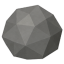

Random events
Bundles and skill checks appear at random while the game is open. Neither happens during offline progress.
Strange bundles
A strange bundle sometimes appears while gathering. Click it on the gathering page or the action bar before it disappears. It always gives everything below; the amounts are random.
What it gives
- 1–2 of the spot's main resource (its first drop)
- 🪙 40–96 coins
- 0.5× the XP of one action
At Mine Gem Rocks it's always 
Settings can also send a desktop notification when one turns up.
Skill checks
An optional bonus for watching the gathering or production page.
- Appear while the skill's page is open and the game isn't minimized. Can be switched off in Settings.
- A hit finishes the current action with its resource and XP. A craft finished by a hit can't miss, fail or burn.
- Production checks come 3 to 5.5 crafts apart.
- Each hit in a row makes the skill's actions faster: +0.4% per hit, up to +2% (⛏️ Mining, 🎣 Fishing, 🪓 Lumbering, 🌿 Herbalism, 🪤 Hunter, 🔨 Forging, 💎 Artifice, 🍖 Cooking, ⚗️ Alchemy, 🪶 Fletching, 💫 Runecrafting). A streak counts up to 5 hits.
- A miss, or letting one run out, ends the streak.
- One appears every 1 to 10 minutes, or 1 to 3 minutes after a hit that continues a streak (🎣 Fishing 2.7 to 4.8, 🌿 Herbalism 2.7 to 4.8).
- Skill checks and bundles add at most 20% XP to any skill.
| Skill | Check | What to do | Bonus |
|---|---|---|---|
| Sweet spot | Hit the ✕ when it appears. | ||
| Parry | Click or press Space as the blade crosses the shield. | ||
| ⛏️ Mining | Cracks | Strike the cracks in order: 1, 2, 3. | +1 ore for striking all three |
| 🎣 Fishing | Hook | Click the bar or press Space while the needle is in the green. | +1 fish for a perfect catch |
| 🪓 Lumbering | Timber | Click when each ring turns green on the notch. | +1 log for chopping all three on the beat |
| 🌿 Herbalism | Herb patch | Pick the three herbs. Leave the weeds. | +1 herb for picking every herb |
| 🪤 Hunter | Tracks | Click each track before it fades. | +1 catch for clicking all three tracks |
| 🔨 Forging | Strike | Strike when each ring turns green on the metal. | The craft always succeeds |
| 🍖 Cooking | Heat | Take it off the heat while the needle is in the green, or press Space. | The craft always succeeds |
| ⚗️ Alchemy | Bubbles | Pop each bubble before it fades. | The craft always succeeds |
| 🪶 Fletching | Feathers | Set the feathers in order: 1, 2, 3. | The craft always succeeds |
| 💎 Artifice | Gems | Pick the three gems. Leave the plain stones. | The craft always succeeds |
| 💫 Runecrafting | Sigils | Trace the sigils in order: 1, 2, 3. | The craft always succeeds |
Sweet spot
. Hit the ✕ when it appears.
Parry
. Click or press Space as the blade crosses the shield.
Cracks
⛏️ Mining. Strike the cracks in order: 1, 2, 3.
Striking a crack out of order is a miss. Striking all three gives 1 more ore.
Hook
🎣 Fishing. Click the bar or press Space while the needle is in the green.
Better fish narrow the green zone and speed up the needle. Clicking the middle third of the green catches 1 extra fish.
| Fishing spot | Fish tier | Green zone | One sweep |
|---|---|---|---|
| 🎣 Net Shrimp | 1 | 28% of the bar | 1.2s |
| 🐟 Net Minnows | 1 | 28% of the bar | 1.2s |
| 🎣 Fly Fish Steelhead Trout | 1 | 28% of the bar | 1.2s |
| 🎣 Bait Anchovies | 2 | 26% of the bar | 1.16s |
| 🎣 Fly Fish Trout | 3 | 24% of the bar | 1.12s |
| 🎣 Fly Fish Salmon | 4 | 22% of the bar | 1.08s |
| 🎣 Cage Lobster | 5 | 20% of the bar | 1.04s |
| 🎣 Harpoon Swordfish | 6 | 18% of the bar | 1s |
| 🎣 Harpoon Shark | 7 | 16% of the bar | 0.96s |
Timber
🪓 Lumbering. Click when each ring turns green on the notch.
Clicking when no ring is landing is a miss. The rings come faster with better trees.
Herb patch
🌿 Herbalism. Pick the three herbs. Leave the weeds.
Touching a weed is a miss. Picking every herb gives 1 more herb.
Tracks
🪤 Hunter. Click each track before it fades.
A track that fades, or a click anywhere else, is a miss. Tracks fade faster with better animals.
Strike
🔨 Forging. Strike when each ring turns green on the metal.
Heat
🍖 Cooking. Take it off the heat while the needle is in the green, or press Space.
Bubbles
⚗️ Alchemy. Pop each bubble before it fades.
Feathers
🪶 Fletching. Set the feathers in order: 1, 2, 3.
Gems
💎 Artifice. Pick the three gems. Leave the plain stones.
Sigils
💫 Runecrafting. Trace the sigils in order: 1, 2, 3.